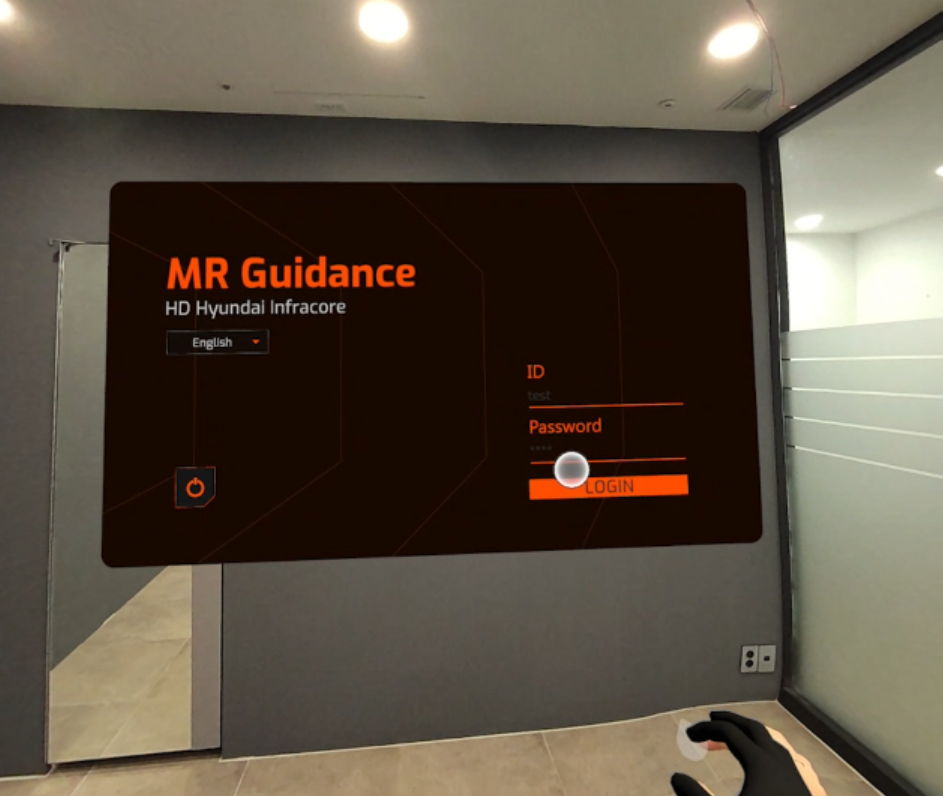
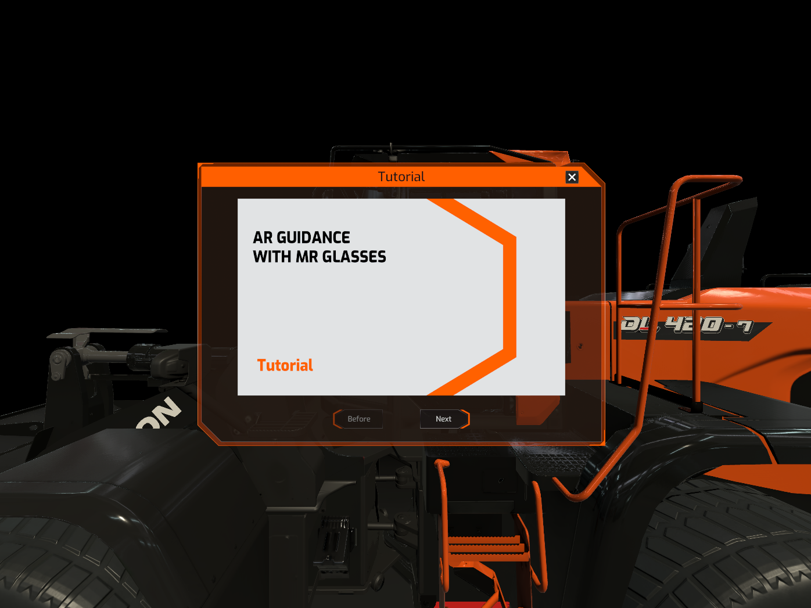

MR Guidance
Name : 김민규
HP : 010-2766-8879
Email :
cicg02@gamil.com
이 프로젝트는 건설장비의 고장진단 정보를 3D 모델을 통해서 편리하게 제공할 수 있도록 구성한 App입니다.
 |
|
|
 |
|
|
|
Before |
After |
이 화면은 로그인 화면입니다.
-UnityWebRequest 활용한 HTTP 통신으로 계정 정보를 확인(AR Guidance와 같은 API 호출)
|

<로그인 화면> |
|
이 화면에서 빛나는 중장비 모델 중 하나를 잡아 위쪽의 두 컨텐츠 구역 중 하나에 넣으면, 해당 컨텐츠로 이동하면서 다음 씬으로 전환됩니다.
-OVRGrabber/Grabbable 활용
|
<컨텐츠 및 모델 선택> |
|
이 화면에서는 컨텐츠 주요 기능인 부품 관련 제어, 모델 정보 표시, 컨텐츠 선택화면으로 전환, 튜토리얼
-U
|
<부품 관련 제어 > |
<기종 정보 확인> |
|
|
<홈(컨텐츠 선택화면)으로 이동> |

<튜토리얼> |
|
이
-U
|
<Move, Rotate, Scale> |
|
<Reset> |
|